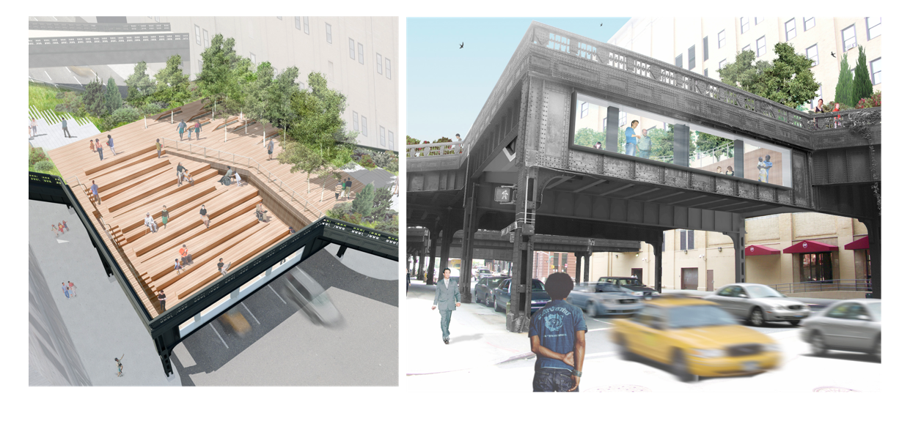

This project explores interface as a connector between people in socially mobile contexts. Working in teams of 2, monitor and record a space at different times of day.Create an instruction set for strangers that augments some aspect of interaction you’ve observed (person-to-person, person-to-group, or group to group) and document it.
10TH Ave Square at The High Line, New York, NY 10011, USA

Many people come to visit the high line from different countries/cultures. We want to involve people to interact with a globe(and to each other).
We are gonna provide pieces of paper, pencil, emojis, pictures of the view taken from High Line, and then people can write things, or choose any of those, and pin them on the globe.
The globe has a sensor that makes it light up when a person approaches.

Using a guide sheet including flags and quotation marks.
Make the globe rotatable.
Glowing constantly in night/ not using a sensor